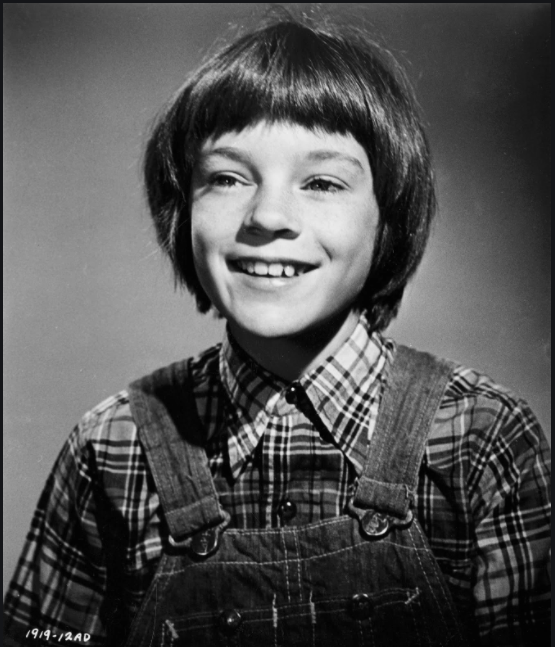

Get to know TKAM most importan characters
Scout Finch: The narrator and protagonist of the story. Jean Louise “Scout” Finch lives with her father, Atticus, her brother, Jem, and their black cook, Calpurnia, in Maycomb. She is intelligent and, by the standards of her time and place, a tomboy. Scout has a combative streak and a basic faith in the goodness of the people in her community. As the novel progresses, this faith is tested by the hatred and prejudice that emerge during Tom Robinson’s trial. Scout eventually develops a more grown-up perspective that enables her to appreciate human goodness without ignoring human evil.
Atticus Finch: Scout and Jem’s father, a lawyer in Maycomb descended from an old local family. A widower with a dry sense of humor, Atticus has instilled in his children his strong sense of morality and justice. He is one of the few residents of Maycomb committed to racial equality. When he agrees to defend Tom Robinson, a black man charged with raping a white woman, he exposes himself and his family to the anger of the white community. With his strongly held convictions, wisdom, and empathy, Atticus functions as the novel’s moral backbone.
Jem Finch:Scout’s brother and constant playmate at the beginning of the story. Jeremy Atticus “Jem” Finch is something of a typical American boy, refusing to back down from dares and fantasizing about playing football. Four years older than Scout, he gradually separates himself from her games, but he remains her close companion and protector throughout the novel. Jem moves into adolescence during the story, and his ideals are shaken badly by the evil and injustice that he perceives during the trial of Tom Robinson.
Arthur “Boo” Radley:A recluse who never sets foot outside his house, Boo dominates the imaginations of Jem, Scout, and Dill. He is a powerful symbol of goodness swathed in an initial shroud of creepiness, leaving little presents for Scout and Jem and emerging at an opportune moment to save the children. An intelligent child emotionally damaged by his cruel father, Boo provides an example of the threat that evil poses to innocence and goodness. He is one of the novel’s “mockingbirds,” a good person injured by the evil of mankind.
Calpurnia:The Finches’ black cook. Calpurnia is a stern disciplinarian and the children’s bridge between the white world and her own black community.
Bob Ewell: A drunken, mostly unemployed member of Maycomb’s poorest family. In his knowingly wrongful accusation that Tom Robinson raped his daughter, Ewell represents the dark side of the South: ignorance, poverty, squalor, and hate-filled racial prejudice.
Charles Baker “Dill” Harris: Jem and Scout’s summer neighbor and friend. Dill is a diminutive, confident boy with an active imagination. He becomes fascinated with Boo Radley and represents the perspective of childhood innocence throughout the novel.
Tom Robinson: The black field hand accused of rape. Tom is one of the novel’s “mockingbirds,” an important symbol of innocence destroyed by evil.
Mayella Ewell: Bob Ewell’s abused, lonely, unhappy daughter. Though one can pity Mayella because of her overbearing father, one cannot pardon her for her shameful indictment of Tom Robinson.
What is my favourite character?
My favourite character is Scout aka Jean Louise. I like her bravery and how she does not let anyone tell her what to do. I like that she does not fit the standards of a "little girl". She does not dress like one, she acts how she wants to act and ignores what a "lady" should be during that time and this is why she is my favourite
